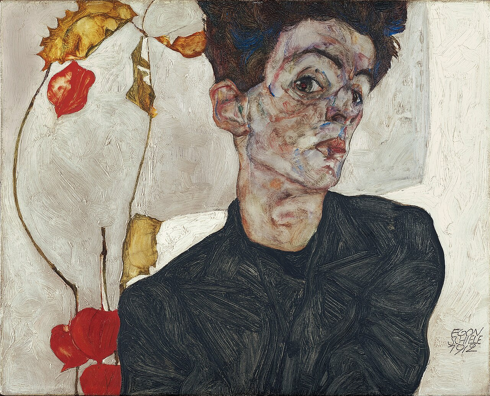
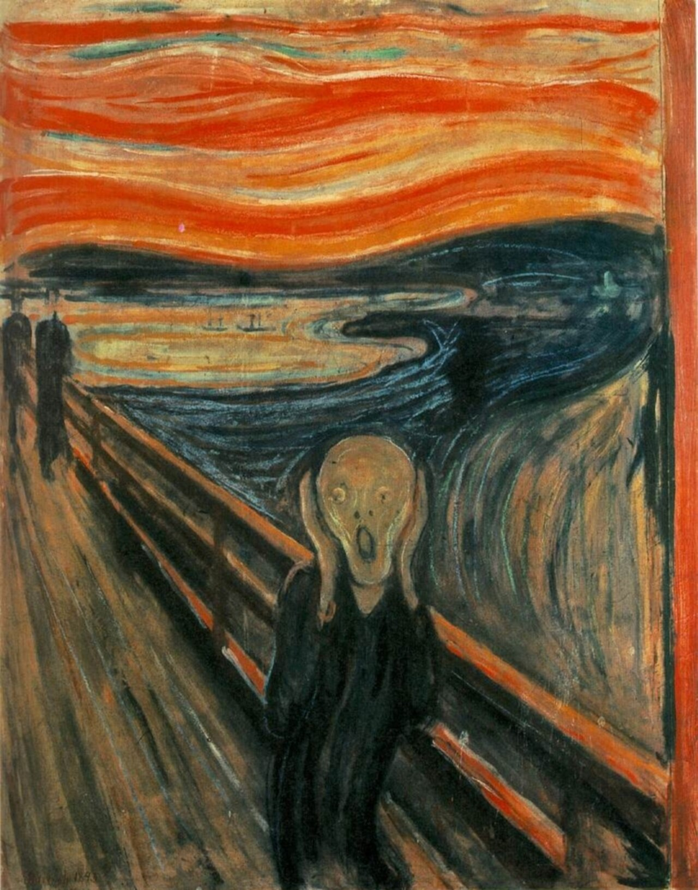
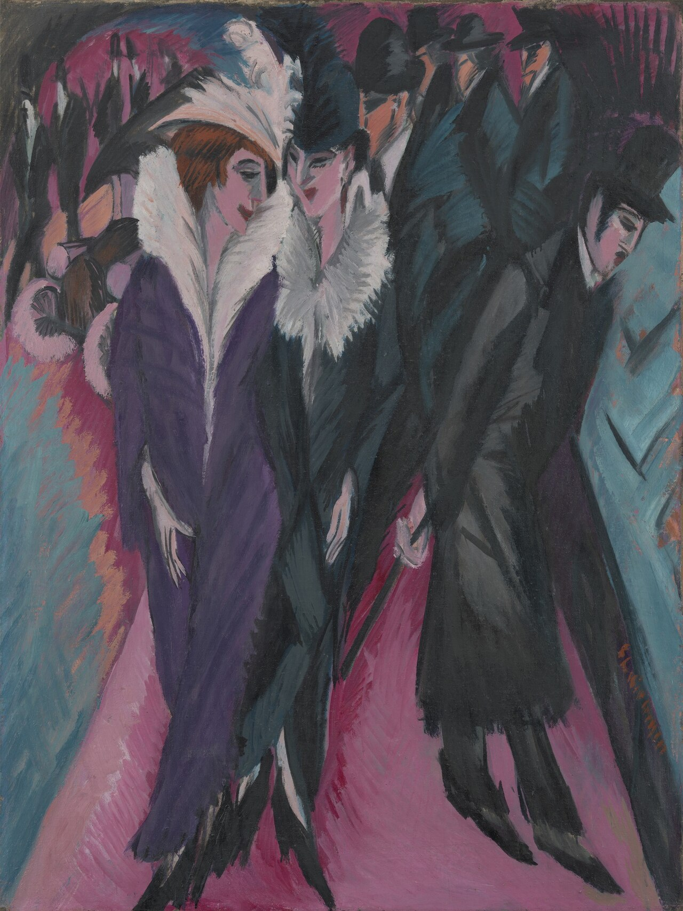
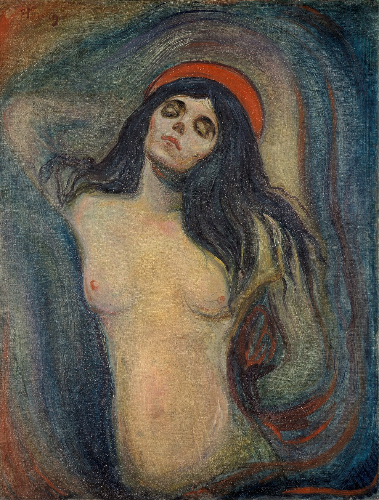

Self-Portrait with Physalis
Egon Schiele
1912 • Austrian ExpressionismSchiele's celebrated psychological self-portrait, marked by angular contours, fragile vulnerability, and intense psychological scrutiny.
View in Collection →
By Edvard Munch (Norwegian, 1863–1944)
Year of Creation: 1893
| Medium | Oil, tempera, pastel, and crayon on cardboard |
|---|---|
| Dimensions | 91 cm × 73.5 cm (35.8 in × 28.9 in) |
| Current Collection | National Museum of Art, Architecture and Design, Oslo, Norway |
| Art Movement | Expressionism / Early Psychological Symbolism |
| Original German Title | Der Schrei der Natur (The Scream of Nature) |
Narrated curatorial commentary (approx. 2 min)
Created in 1893, Edvard Munch's The Scream is widely acknowledged as the supreme archetype of modern psychological alienation. As recorded in Munch's personal diary, the concept arose while walking along a path above Kristiania (Oslo) at sunset: the clouds turned blood-red, and Munch felt an overwhelming, infinite scream coursing through nature itself.
The central genderless, hairless figure clutches its skull with wide, hollow eyes and mouth agape in terror. Rather than depicting external anatomy, Munch translates internal emotional anguish directly onto the canvas, warping the perspective of the wooden pier and the churning violet waters below.
By dispensing with literal representation in favor of distorted diagonal lines, clashing cadmium orange, and brooding indigo, Munch created a modern icon reflecting the dread, vulnerability, and spiritual uncertainty of humanity at the dawn of the industrialized 20th century.
Discover works reflecting subjective existential struggle, psychological depth, and bold emotional form.

Egon Schiele
1912 • Austrian ExpressionismSchiele's celebrated psychological self-portrait, marked by angular contours, fragile vulnerability, and intense psychological scrutiny.
View in Collection →
Ernst Ludwig Kirchner
1913 • Die Brücke ExpressionismSharply angled figures and jarring neon hues capturing the restless, nervous tension of pre-war metropolitan Berlin.
View in Collection →
Edvard Munch
1894–1895 • Expressionism / SymbolismMunch's haunting masterpiece exploring love, mortality, and ecstasy with sensual, undulating lines and dark psychological resonance.
View in Collection →